Use VisAtoms 2.1
Qing Hou
Université Libre de Bruxelles, Belgium
And
Sichuan University, China
|
CONTENTS
Overview
Input Files
Load the data
Change Background
Normalization
Change position
Change drawing style
Change sizes
|
Pick atoms Make cluster Save configuration Download
|
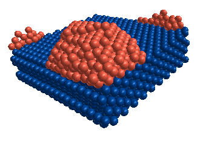 |
VisAtoms is a tool for the visualization of MD calculations. It provides 3D view of atomic structures of materials. By VisAtoms, one can rotate, translate, zoom and clip the scene. You can also edit the samples by deleting, moving, merging other samples. The graphics could be saved into bitmap files or AVI file for animations. This provides a convenient way to include the visualized MD results into presentations prepared by, for example, Word or PowerPoint. Here I present an introduction on how to use this software in a step by step way. The introduction is not complete. VisAtoms is simple to use. Users can try other functions on menus that are not mentioned here.
One can add any comments or space lines on the head of input files. Each comment line should have ‘!’ as the first letter. Following is an example of data file.
!*** This is an example of data file for VisAtoms.
! The first column is the type of atoms. 2-4 columns
! are position of atoms. The columns are seperated by
! space or comma. This is sample is a cluster
! deposition on a surface.
!Type, x y z
1, -1.676400e+000, -1.686000e+000, -1.086800e+000
1, -1.690600e+000, -1.446700e+000, -7.509200e-001
1, -1.787600e+000, -1.623400e+000, -7.458300e-001
1, -1.786800e+000, -1.729800e+000, -9.213300e-001
..., .........................., .........................., ...........................
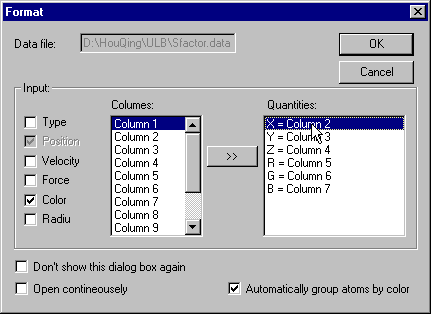
Firstly, you should click the check boxes to choice the quantities that you want to input. Then, select a column on the left list box and select a quantity on the right list box. Then click " >>" button to associate the data and the quantity.
One can check
Open continuously in the dialog box. You can open files and render the scene without stopping if your files have number as their extensions. Click File-Next menu or File-Previous to invoke this process.Back to contents
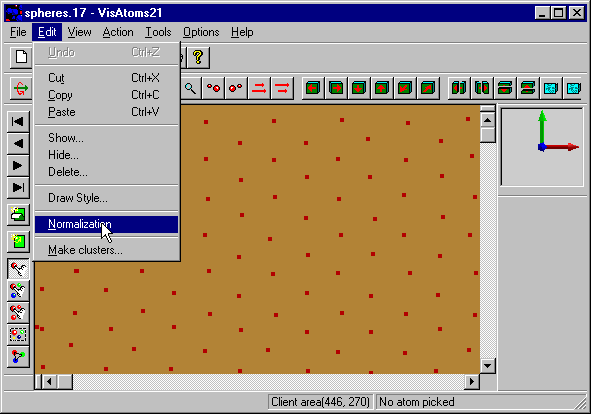
Then the graphics will be fit into the window:
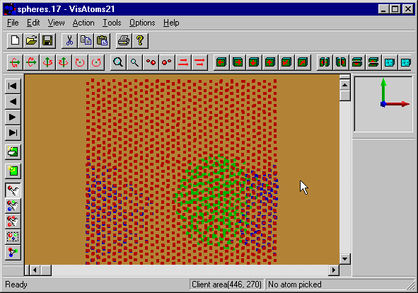
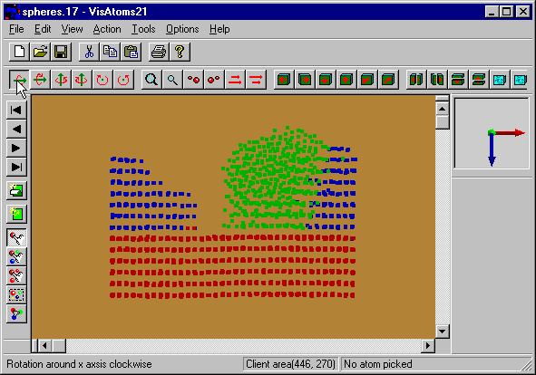
Back to contents
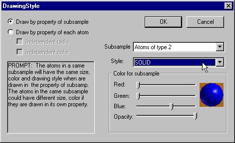
You can draw an atom by the properties (color and style) of its kind if you check
Draw by property of subsample. A subsample here is a group of atoms of the same kind. In this way, atoms of different kind could be drawn in different style. You can also draw atoms by their own properties if you Draw by property of each atom. In this case, all the atoms have the same style (dot is the default style) but could have different color or radii even for atoms of the same kind if input color or radius for each atom have input (see also INPUT FILE).Following is the results of
Draw by property of subsample. The atoms of type 1 are drawn in circle, type 2 and type 3 drawn in solid sphere.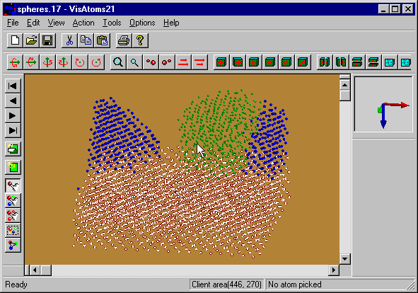
Back to contents
The size of the atoms are too small in this figure, thus you can make them bigger (or smaller) by click Action-Zoom-Make sphere larger (Action-Zoom-Make sphere smaller) or tool bar:
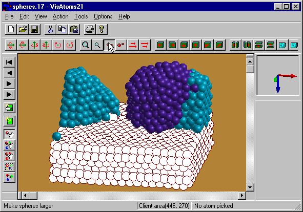
You can also change the length of vectors if you have display velocity or force field of atoms.
Back to contents
Back to contents
Back to contents
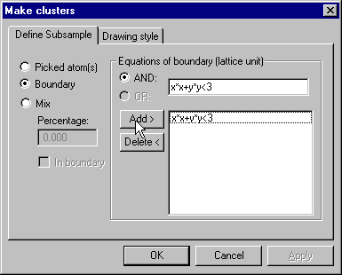
Input the equation(s) for the boundary that define a cluster. As an example above, I make a cylinder. Following is the results. Some atoms originally in substrate and cluster 1 and 2 form a new cluster.
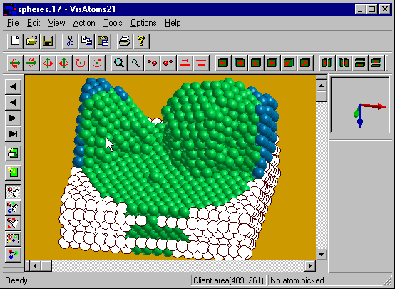
After hide other cluster, the new cluster is something like following:
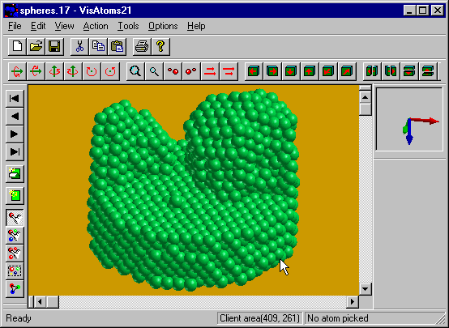
Click File-Save configuration menu to save the coordinates of atoms that have been modified.
Comments or suggestions and error reports are welcome.